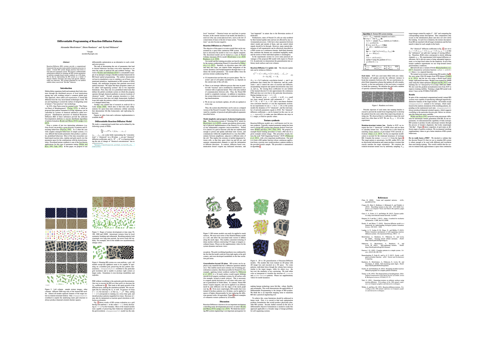

Paper

BibTeX
@inproceedings{mordvintsev2021differentiable,
title={Differentiable Programming of Reaction-Diffusion Patterns},
author={Mordvintsev, Alexander and Randazzo, Ettore and Niklasson, Eyvind},
booktitle={ALIFE 2021: The 2021 Conference on Artificial Life},
year={2021},
organization={MIT Press}
}